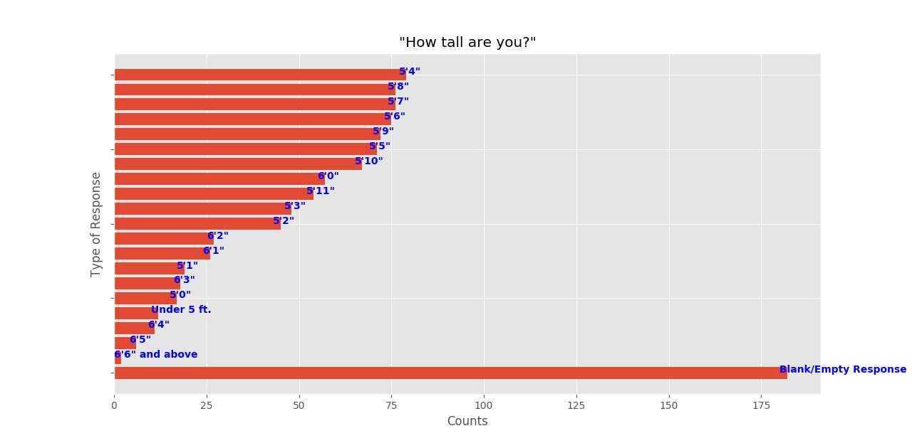
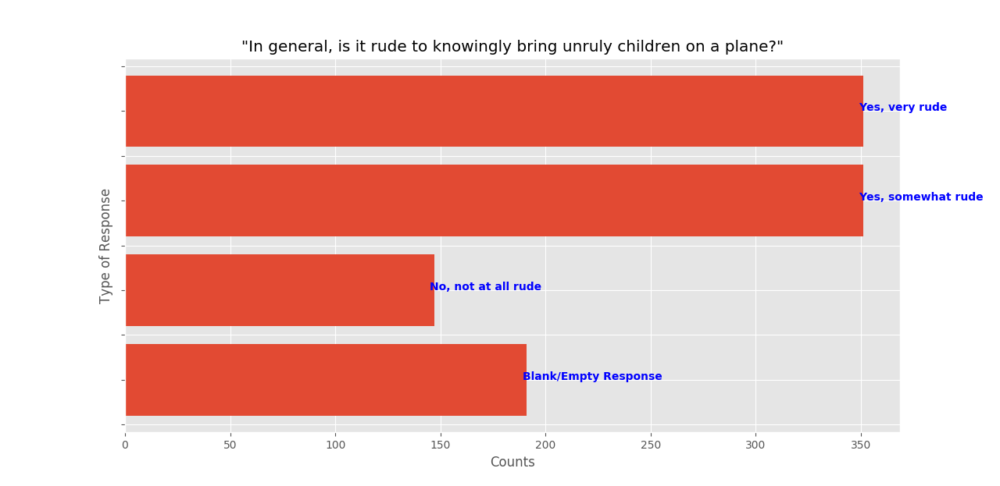
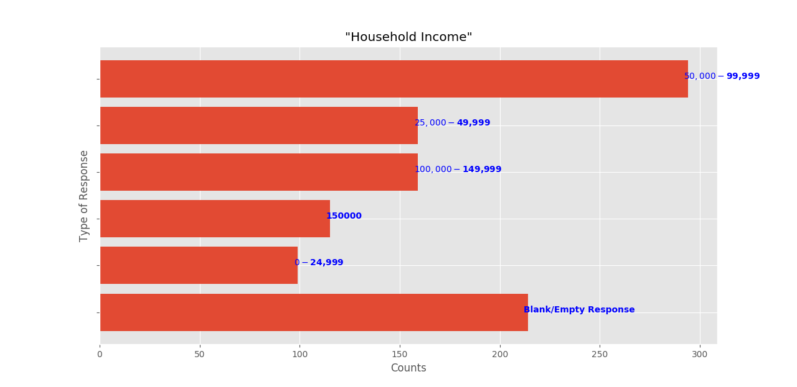

Click on the desired view-type
NOTE: Click on the tabs below to be able to view the graph.

INFERENCES/MEASURES
- Usually when the number of blank values is of a significant proportion, it starts to cause issues in data analysis.
- The main issue introduced by these error or blank values are the bias which gets into the analysis.
- This is a clear example where there are a lot of blank values in the field.

INFERENCES/MEASURES
- Here we can see how the share of the blank values is of a significant contribution.
- This may be masking an important insight that one could probably gain.
- While doing analysis, one must be cognizant of such situations and not generalize without providing proper documenation.

INFERENCES/MEASURES
- As it can be seen, the share of blank is also present here.
- Although only three charts have been shown for the sake of sanity, almost every field has blank values and you can see that in Section-4.
- Such a nature of data makes this step of quality analysis important so that the user is aware of the caveats of the analysis.